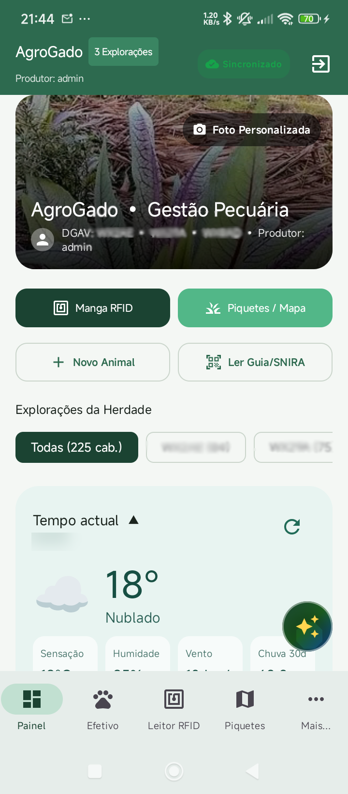

Produto Real em Produção
📸 Ecrãs Reais da Aplicação
Toque em qualquer imagem para ampliar. Capturas diretas em exploração multi-espécie com +220 cabeças.

Painel & Meteorologia
Ações do dia + Chuva 30d

Efetivo & Nascimentos
PDF DGAV + Verificação Carência

Manga Eletrónica RFID
ISO 11784/85 + GMD Automático
Mapa Satélite HD
Perímetros GPS + Carga por Piquete

Motor Voisin & Chuva
Recuperação ajustada a 30 dias